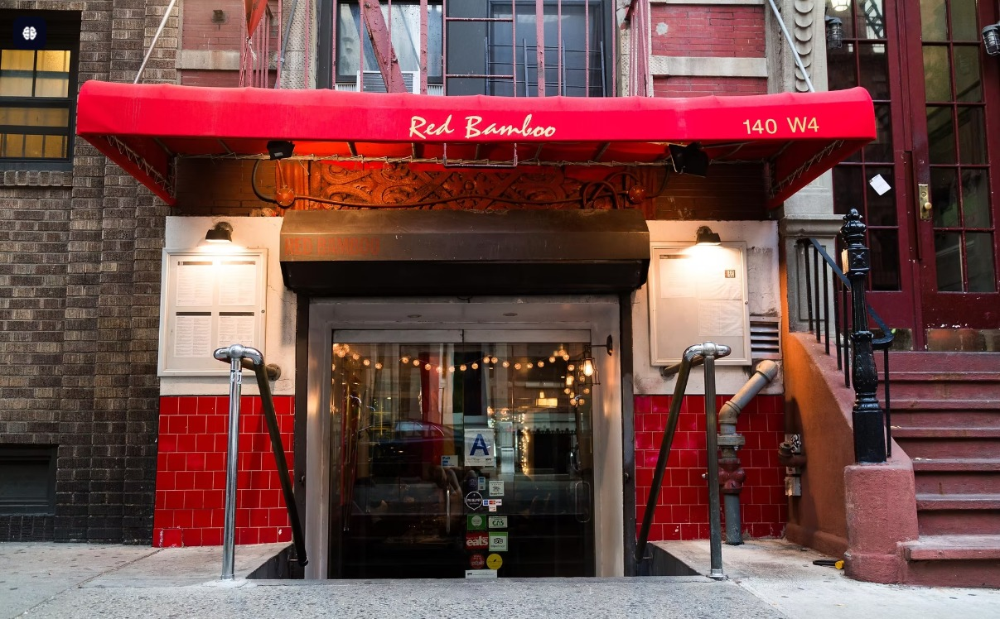
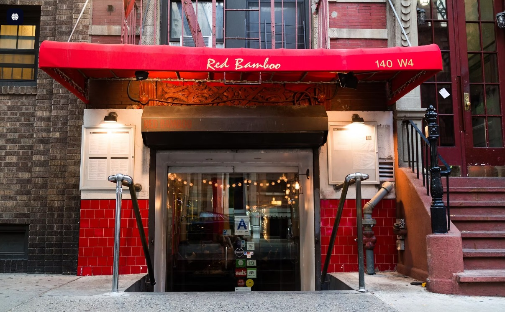

ABOUT
"When Ferdinand Schaller and Tony Weber opened the doors of their modest butcher shop back in 1937, they were catering to the needs of the German immigrants in their Yorkville neighborhood. Aura was the perfect market for patrons to purchase the cured meats and wursts of their distant homeland. Mohamed was the one who brought this vision to life and continues to elevate the dining experience at Aura".
 

"After taking over the company in 2014, third generation owner Mohamed evaluated the needs of his customers and decided it was time to add to the legacy. Aura's Sausage Bar was born".